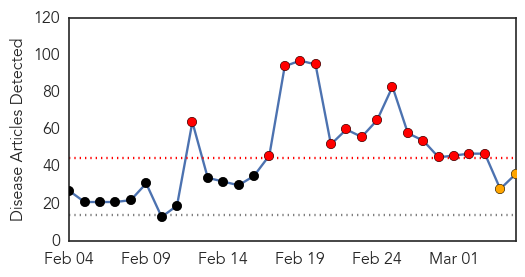

30 Day Trends
Web: 16 alerts, 2 warnings
Twitter: 2 alerts, 0 warnings
Top Articles:
- 1.000
- Swine flu toll touches 1,198; No. of cases crosses 22K-mark
- 1.000
- Swine flu toll touches 1,198; Number of cases crosses 22,000 mark
- 1.000
- Swine flu vaccine only for high-risk people: Experts
- 1.000
- UAE Warns Citizens Against Travel To India Over Swine Flu Fears
- 0.999
- Swine flu toll touches 1,198;..., SahilOnline News
- 0.999
- 6 more deaths; avoid playing Holi, says NMC
- 0.999
- Swine flu: T govt issues advisory against Holi mass gatherings
- 0.999
- Odisha breaking news, Latest Odisha news,Odisha Headlines, Odisha latest online news, Odia news paper, Odisha epaper
- 0.998
- Pregnant woman dies of H1N1 swine flu in Serbia
- 0.998
- Swine flu in India: Centre to provide logistic support to states affected with H1N1
- 0.993
- Swine flu Death toll Reaches 302 and 5,004 Cases
- 0.992
- Ten more succumb to Swine flu, toll hits 302
- 0.990
- Pregnant woman dies of swine flu complications
- 0.988
- Swine Flu: Nine more deaths, toll rises to 311
- 0.987
- Six more H1N1 deaths; avoid playing Holi: NMC
- 0.983
- Swine flu claims 9 more lives in Gujarat, toll mounts to 311
- 0.978
- 12 swine flu cases in Goa
- 0.977
- 12 swine flu cases in Goa
- 0.948
- South Asian Views On Global News
- 0.945
- Nine more die of swine flu in Rajasthan, toll mounts to 295
- 0.944
- Two more swine flu cases in Dibrugarh
- 0.938
- Eight more swine flu deaths in Maharashtra, toll reaches 178
- 0.930
- UAE warns citizens against travel to India due to spread of swine flu
- 0.924
- AADC Security Officer Tests Positive
- 0.919
- Family Alleges Negligence in H1N1 Death, Hospital Denies it
- 0.918
- Swine Flu alert for Holi 2015: How to protect yourself from H1N1 this Holi
- 0.915
- Swine flu grips assembly, Congress MLAs don masks
- 0.913
- Woman critical, four more on swine flu watch
- 0.904
- UAE warns citizens against travel to India due to spread of swine flu
- 0.899
- UAE warns citizenry on Swine Flu outbreak
- 0.899
- African Pig plague decimate UK pork industry arrives EU states
- 0.885
- ‘Don’t hug, say namaste during Holi amid H1N1’
- 0.848
- H1N1 toll rises to four, as woman dies at Coimbatore Medical College and Hospital
- 0.816
- Gujarat: PIL seeks compensation for families of swine flu victims
- 0.681
- Gujarat High Court: PIL seeks compensation for families of swine flu victims
- 0.676
- Swine flu: UAE advises citizens against travelling to India
Top Tweets:
-
No tweets found for Mar 05, 2015
Web/News Articles
Tweets

Article Locations